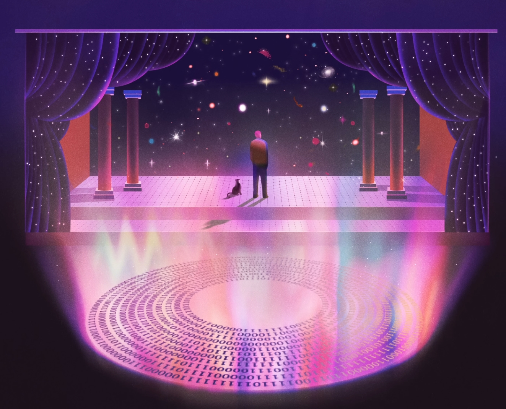

The Journal of a Physicist
Building Stuff with Cool People;
Construindo Coisas com Pessoas Legais.

The Journal of a Physicist
Um espaço dedicado à construção de uma mente completa, onde a Física, a Matemática, a Ciência e a Tecnologia se encontram com a Arte, a Filosofia e a Escrita. Registros de aprendizado, investigações sobre a natureza da realidade, projetos construídos com propósito e reflexões sobre o que significa ver o mundo com profundidade.
Ciência
Física, matemática e computação como ferramentas para compreender a natureza da realidade.

Arte
Arte, Filosofia e Literatura, como linguagens para entender a complexibilidade da realidade humana.

Tecnologia
Engenharia, computação e ciência aplicada como ferramentas para construir e reinventar a estrutura da realidade.